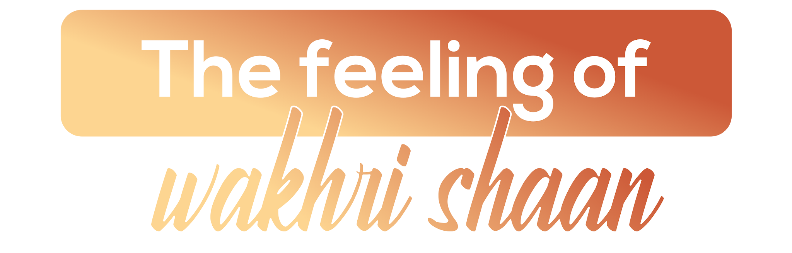

The Feeling of Wakhri Shaan
Wakhri Shaan — unique pride. Ludhiana wears its industrial identity, Punjabi spirit, and cultural confidence boldly and without apology.
Ludhiana is Punjab's industrial powerhouse — the city that has earned the title "Manchester of Punjab" for its massive textile and hosiery manufacturing industry, which supplies markets across the world. But beneath the industrial façade lies a city of extraordinary Punjabi warmth, musical heritage, and community pride.
AIESEC in Ludhiana offers exchange participants an authentic window into working-class Punjabi life — the foundation of India's most famous culture. From the sheer scale of Ludhiana's manufacturing economy to the warmth of its langar kitchens and the energy of its Bhangra halls, this city embodies Wakhri Shaan — a pride that is utterly its own.

What makes Ludhiana unforgettable.

Ludhiana produces 60% of India's woollen hosiery, 80% of the country's sewing machine parts, and half of all the bicycles manufactured in India — industrial output on a scale that earned it the Punjab's Manchester designation. The professional environment is shaped by this manufacturing culture: purposeful, commercially serious, and confident. For exchange participants interested in supply chains and industry, the access here is exceptional.

Ludhiana's claim to be the heartland of Bhangra culture rests on its geography — the dance was born in the fields around it. The folk institutions, drum-making workshops, and dance academies that keep the tradition alive are concentrated in and around the city. The experience of bhangra performed in this context is entirely different from what a competition shows.

Gurudwara Dukh Niwaran Sahib, associated with Guru Teg Bahadur, is one of Punjab's most significant spiritual sites — its holy tank and recited granth creating an atmosphere of particular calm. The langar served here feeds thousands daily without distinction of faith, class, or origin. For exchange participants, the langar experience is one of the most quietly powerful encounters available in India.

Ludhiana's food culture is uncompromising — Punjabi cuisine as it is eaten where it was made, not modified for urban sensibilities or export. The lassi is thick, the butter chicken built on actual wood-fire flavour, and the winter sarson da saag an entirely different dish from any restaurant version. Eating in Ludhiana recalibrates your understanding of North Indian food.

Ludhiana has produced a significant portion of India's Olympic and Commonwealth Games athletes in hockey, wrestling, and athletics — a result of Punjabi physical culture, the Khalsa College sporting tradition, and a community that takes competitive sport seriously. The city's hockey grounds and wrestling akharas are living institutions. Exchange participants interested in sport will find unusually strong common ground here.

Drive an hour from Ludhiana in any direction and you are in the Punjab that exists in folk songs — vast flat fields of wheat in winter, the smell of harvested mustard in spring, villages of brick and neem trees where the pace of life is entirely different. The contrast with the industrial city is immediate and striking. These trips offer some of the most honest encounters with rural India available on any exchange.

PAU Ludhiana, established in 1962, is one of Asia's foremost agricultural research institutions — directly responsible for the seed varieties and farming methods that drove India's Green Revolution and prevented famine. The campus is open to visitors and its museums document the agricultural transformation of Punjab in detail. The scale of PAU's impact on Indian history makes it one of the most significant research institutions in the country.

Ludhiana's old city — the areas around the Ghanta Ghar clock tower and the Jama Masjid — preserves the layered commercial geography of a medieval Punjabi trading town. The textile wholesalers, dyers, metal-workers, and street food vendors occupy the same lanes they have for generations. For exchange participants willing to leave the main roads, this is where the city's history becomes tangible.
Everything you need to know before arriving in Ludhiana.
Options include hostels, host families, and shared flats — ideally within a 4 km radius of your workplace. Your local committee will help arrange everything.
Ludhiana is very affordable. Budget ₹8,000–10,000 per month for meals, local transport, and daily expenses. Punjab's famous hospitality means food is often freely shared.
Auto-rickshaws, shared autos, and Ola/Uber taxis provide good connectivity across the city. Punjab Roadways buses connect Ludhiana to nearby cities and towns affordably.
You'll need a valid Indian visa for your exchange. Your local committee will provide a detailed visa guide and assist with the application process.
Ludhiana has strong private healthcare including Dayanand Medical College & Hospital and multiple Apollo clinics. Your local committee provides health protocols and 24/7 emergency support.
Punjabi is the primary language and a source of immense local pride. Hindi is widely spoken. English is understood in academic and business settings. Learn "Sat Sri Akal!" immediately.
Jio and Airtel offer strong 4G coverage across Ludhiana. SIM cards are available at any mobile store with your passport — plans are very affordable with generous data allowances.
Cover your head and remove shoes before entering Gurudwaras — this is non-negotiable and deeply important. Punjabi hospitality is legendary; declining food offered is considered impolite. Embrace the warmth.
Two ways to experience Ludhiana through AIESEC.

A 6–8 week volunteering exchange program for ages 18–30, focused on sustainable development goals. Make a tangible impact on local communities while immersing yourself in Punjabi culture.

Bridge educational gaps by teaching in Ludhiana's schools and communities. Develop culturally responsive pedagogy while making a lasting impact on young Punjabi learners.
Your dedicated team in Ludhiana, ready to make your exchange exceptional.
Reach out to our national team for any questions about exchanges in Ludhiana.


